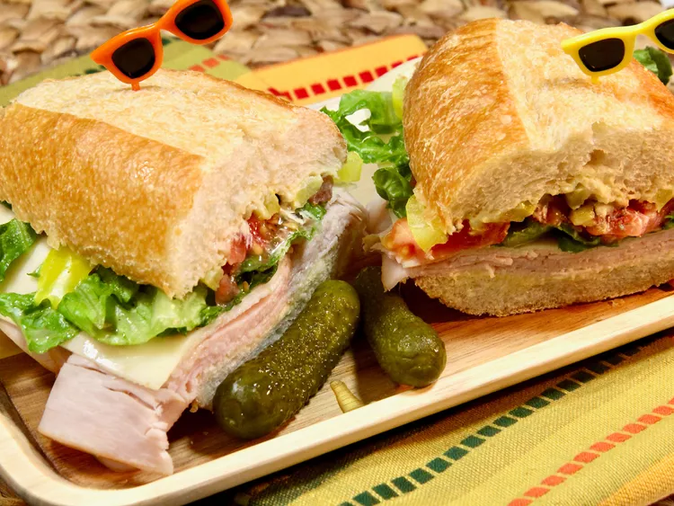

Turkey Sub

About Turkey Sub
This turkey sub is one of our favorite sandwiches. Soup and salad or salad and a good sandwich often is a meal for us, and we love a deli-style turkey sub
Ingredients
- 1 (7 inch) sub roll
- 2 tablespoons mayonnaise
- 1 tablespoon Dijon mustard
- 3 thin slices deli turkey
- 1 slice Swiss cheese
- 1/2 cup roughly-shredded lettuce (such as Romaine or iceberg)
- 2 thin slice tomato, cut into chunks
- 1/3 cup banana pepper, drained
- 1/4 cup thinly sliced red onion
- light sprinkle of dried oregano
- salt and freashly ground black pepper to taste
Directions
- Slice the sub roll in half lengthwise
- Stir mayonnaise and mustard together in a small bowl until well combined. Spread mixture on both sides of the roll
- Layer turkey asd Swiss cheese on bottom half. Top with lettuce, tomatoes, banana peppers, and red onion
- Spinkle with oregano, and season with salt pepper. Place the top half of the roll the sandwich, and serve